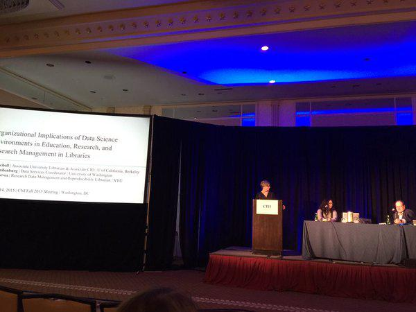
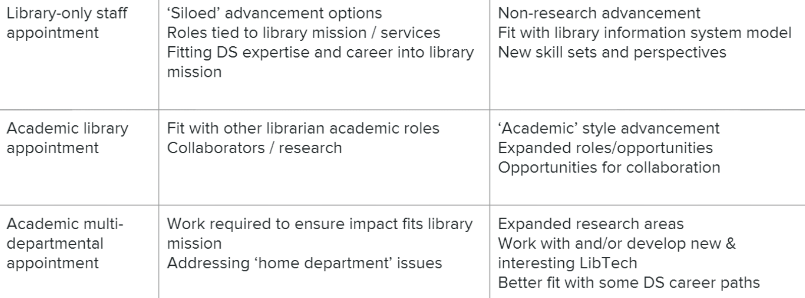

Presenting at CNI
This month was excellent as it marked my first ever professional presentation as a NYU Librarian :)
Last year during NDSR, it seemed like I was giving a presentation at a conference, professional organization meeting, webinar, etc. every other week. It’s been exceptionally restful (well, sort of...) to spend these past 5 months getting to know NYU, my colleagues, the scope of my work, and really just getting a feel for my day-to-day.
One of the most exciting outputs from my first semester here at NYU has surrounded my work on the Moore-Sloan Data Science Environment (msdse.org). Back in October (link to Oct 2015 post), I wrote about the MSDSE Summit that was held at Suncadia Resort in Washington state. God it was so incredibly beautiful there and I got to do some really cool stuff, but the best thing that happened was definitely meeting Jenny Muilenburg and Erik Mitchell.
As the three librarians in the MSDSE, we wanted to meet and discuss some of the potential outputs that our Libraries Working Group (which had its first in-person meeting at the Summit!) could produce. One thing that came out of it was our presentation at the Coalition of Networked Information Fall 2015 Meeting in Washington, DC.
There we are! Left to right: Jenny, me, Erik.
We were really interested in exploring more overlap between the work that data scientists do and the potential work that could take place in libraries. Because the nature of data science is so multidisciplinary, and encompasses a variety of research methods and domains, it faces a lot of the same issues as libraries do in open scholarship, data access, reproducibility, curation, standardized vocabularies and metadata, and data curation.
There are so many opportunities for us to all collaborate on these issues and create infrastructure and service models to better serve our communities. However, deploying these is super challenging. This has been a big strength of the MSDSE--the chance for universities to create these new collaborations as well as create new employment opportunities for data scientists.
So in thinking through these issues, Jenny, Erik, and I thought of potential career paths for data scientists in libraries. We thought of three main categories of jobs:
You can see our slides on the Open Science Framework as well as our recorded presentation, which CNI is graciously hosting on their YouTube and Vimeo channels:
Organizational Implications of Data Science Environments in Education, Research, and Research Management in Libraries from CNI Video Channel.